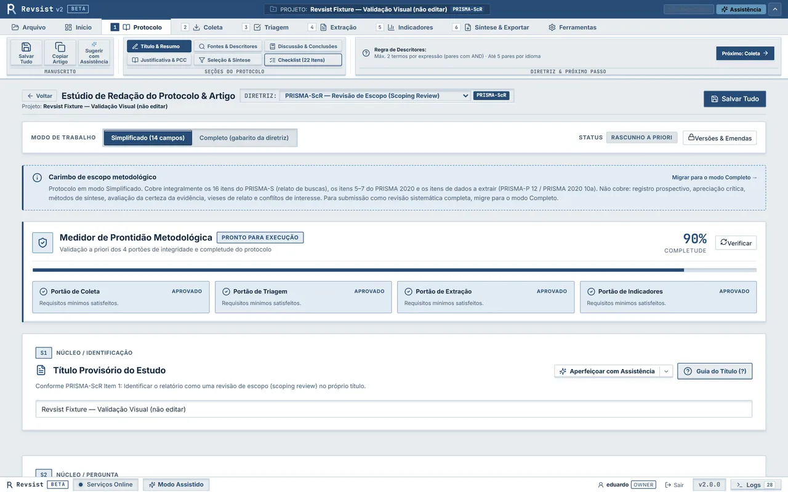
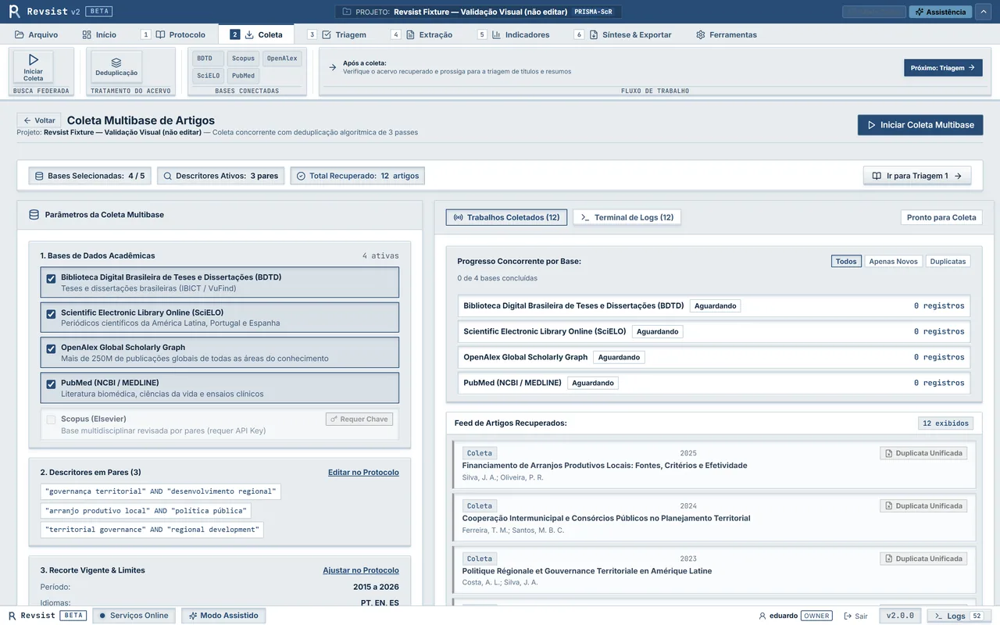
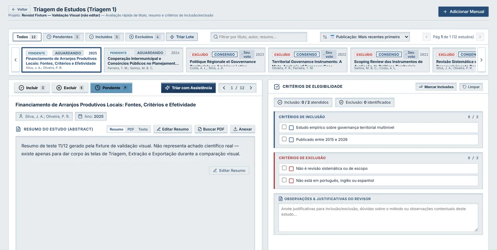
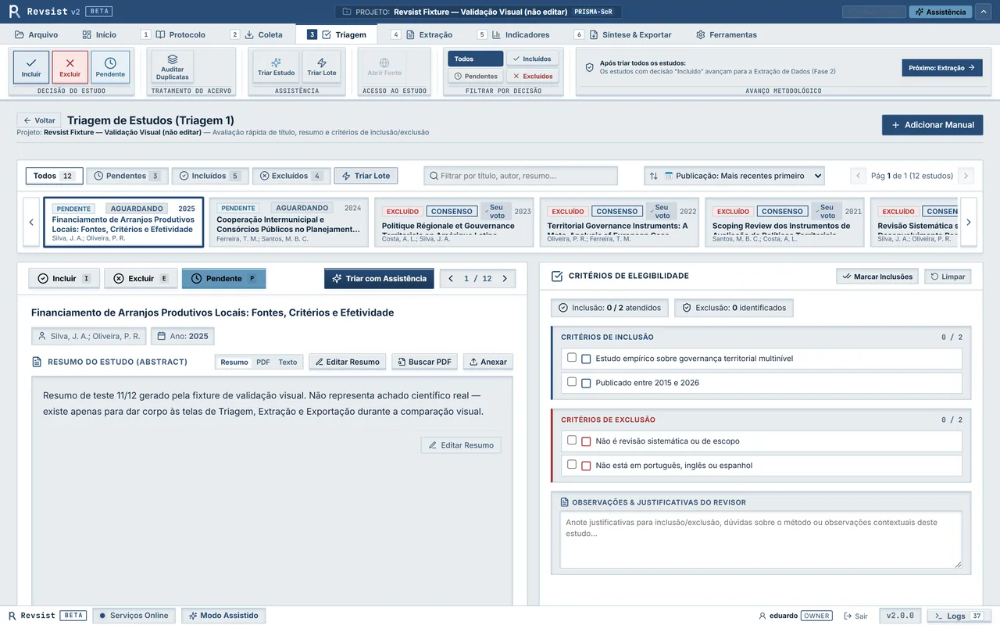
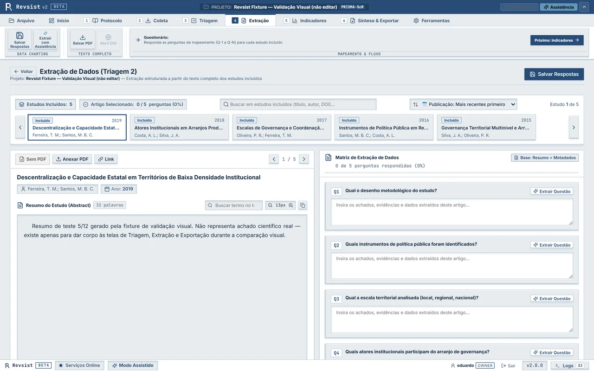
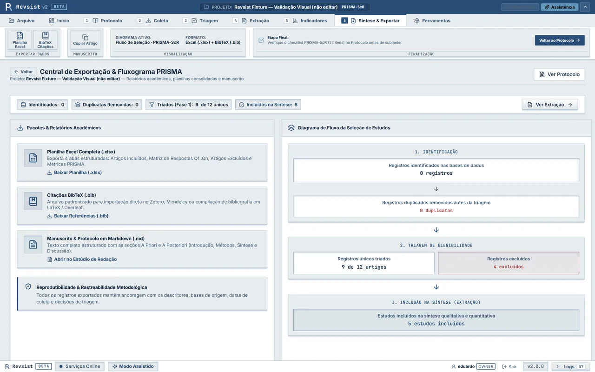

27 itens · o mais usado
PRISMA 2020
O padrão internacional para revisão sistemática. Se a revista não disser qual usar, é este.
Grátis · beta aberta · código aberto
Busque em cinco bases de uma vez, decida artigo por artigo com um colega conferindo e baixe no fim o diagrama que a revista pede. O Revsist anota cada escolha sua — para quando alguém perguntar por que aquele artigo ficou de fora.
Por que existe
O site de cada base, várias abas abertas, PDF baixando e a planilha do lado. Numa revisão feita à mão, boa parte do tempo vai em copiar, colar e lembrar onde você parou, e não em ler e decidir.
Buscar, ler, decidir, anotar: no meio de tanta etapa, é fácil perder o fio e não saber o que falta.
Na mão
Agora Títulos e resumos Em seguida Texto completo
No Revsist Você vê o que fazer agora, o que vem em seguida e o que já está pronto.
Na mão
No Revsist Você define o plano da pesquisa uma vez e ele busca em todas as bases do estudo.
Na mão
No Revsist Os artigos de todas as bases chegam numa fila só, e você lê e decide na mesma tela.
Na mão
No Revsist O texto completo é procurado sozinho e o PDF abre no programa. Quando não é encontrado, você vê onde procurar e anexa o arquivo.
Na mão
No Revsist As perguntas da ficha ficam no plano da pesquisa, definidas uma vez, e você responde com o artigo aberto na mesma tela.
Como funciona
Clique em cada etapa para ver a tela do programa. Se quiser espiar por dentro, o segundo botão mostra o que fica gravado naquele momento.
Etapa 1 de 6
Você escreve a pergunta da pesquisa, escolhe o roteiro metodológico da sua área e lista o que faz um artigo entrar ou sair. Depois disso o Revsist tranca essa lista: é ela que vale até o fim.

O plano que você escreveu fica salvo assim — e trancado:
{
"plano_da_revisao": {
"titulo": "Governança e dinâmica territorial em APLs do semiárido",
"roteiro": "PRISMA-ScR",
"esquema_da_pergunta": "PCC",
"termos_de_busca": [
["arranjos produtivos locais", "desenvolvimento regional"],
["governanca territorial", "semiarido brasileiro"]
],
"entra_se": ["trata de governança territorial", "trata do semiárido"],
"sai_se": ["é ensaio de laboratório"],
"situacao": "TRANCADO",
"trancado_em": "2026-09-10T18:02:11Z"
}
}Etapa 2 de 6
Você escreve os termos uma vez só e o Revsist procura em BDTD, SciELO, Scopus, OpenAlex e PubMed ao mesmo tempo. Se já tiver um arquivo do Zotero ou do Mendeley, dá para subir também.

De cada busca fica guardado o que foi pedido e o que cada base respondeu:
{
"busca": {
"termos": "\"arranjos produtivos locais\" E \"desenvolvimento regional\"",
"quando": "2026-09-10T19:40:12Z",
"bases": [
{ "base": "BDTD", "resultados": 142, "resposta": "ok" },
{ "base": "SciELO", "resultados": 89, "resposta": "ok" },
{ "base": "OpenAlex", "resultados": 0, "resposta": "ok" }
],
"total_encontrado": 231
}
}Etapa 3 de 6
O mesmo artigo costuma aparecer em duas ou três bases. O Revsist junta essas cópias numa só, continua sabendo de onde cada uma veio e mostra quantas foram — esse número vai direto para o diagrama do final.

A limpeza fecha uma conta que precisa aparecer no diagrama final:
{
"limpeza_de_repetidos": {
"artigos_recebidos": 231,
"mesmo_DOI": 18,
"mesmo_titulo_e_ano": 9,
"repetidos_no_total": 27,
"artigos_unicos": 204
}
}Etapa 4 de 6
Aparece o título e o resumo com os seus critérios do lado. Você inclui ou exclui e explica em uma linha. Dois autores podem decidir separadamente, sem ver a resposta um do outro, e comparar no fim.

Cada decisão sua vira um registro como este:
{
"decisao": {
"artigo": "Dinâmica territorial e governança no APL de fruticultura",
"resultado": "INCLUÍDO",
"criterios_atendidos": ["governança territorial", "recorte semiárido"],
"quem_decidiu": "Eduardo",
"quando": "2026-09-10T20:15:32Z",
"houve_opiniao_de_ia": true,
"modelo_consultado": "qwen2.5 (rodando no computador do revisor)"
}
}Etapa 5 de 6
Para os artigos que sobraram, você preenche uma ficha igual para todos: o que foi estudado, onde, com que método, que resultado deu. Cada resposta pode ficar ligada ao trecho do texto que a comprova.

O que você anota de cada artigo fica assim, pronto para virar tabela:
{
"ficha_do_artigo": {
"artigo": "Dinâmica territorial e governança no APL de fruticultura",
"onde_foi_estudado": "Polo Juazeiro-Petrolina",
"escala": "Municipal",
"forma_de_organizacao": "Consórcio intermunicipal e cooperativas",
"indicadores_usados": ["PIB agrícola", "emprego formal"],
"trecho_que_comprova": "página 84"
}
}Etapa 6 de 6
No fim você baixa o diagrama que a revista exige, a tabela com tudo o que anotou e a bibliografia no formato do seu gerenciador de referências. É o material que entra na dissertação.

Os números do diagrama não são digitados: são a contagem do seu próprio trabalho.
{
"numeros_do_diagrama": {
"encontrados_nas_bases": 231,
"repetidos_removidos": 27,
"lidos_por_titulo_e_resumo": 204,
"lidos_por_inteiro": 48,
"incluidos_na_revisao": 24
},
"formatos_para_baixar": ["PNG", "SVG", "RIS", "BibTeX", "XLSX"]
}Quando alguém perguntar
Cada vez que você inclui ou exclui um artigo, o Revsist guarda quatro coisas. Meses depois, quando a banca perguntar por que aquele estudo ficou de fora, a resposta está lá — com data e hora.
Qual era o artigo
Título, autores, ano e de qual base ele veio.
O que foi conferido
Quais dos seus critérios o artigo atendeu, e quais não.
Quem decidiu, e quando
O nome do revisor, o do segundo conferente e a data com a hora.
Um selo de que nada mudou
Um código calculado a partir do que foi avaliado. Se alguém alterar qualquer coisa, ele muda — e é assim que se prova que o registro é o original.
9c3b4f51e0892acb7102e35a9812e4f01488c9f5d1a8e2074d2b9911e8c4a17b
No fim
Toda revisão sistemática publicada precisa mostrar este caminho: quantos artigos você encontrou, quantos descartou e por quê. O Revsist monta o desenho com os números que o seu próprio trabalho produziu — você não digita nenhum deles.
Junto sai a lista dos termos que você usou, as bases consultadas e as datas da busca — o suficiente para outra pessoa repetir o seu caminho.
Roteiros
Cada área tem uma lista oficial do que precisa ser relatado numa revisão. O Revsist já vem com onze delas em forma de checklist: você vai marcando conforme avança e sabe o que ainda falta. Abaixo, as seis mais usadas.
27 itens · o mais usado
O padrão internacional para revisão sistemática. Se a revista não disser qual usar, é este.
22 itens · revisão de escopo
Para quando você quer mapear o que existe sobre um tema, em vez de responder a uma pergunta fechada.
Revisão de escopo
O método do Joanna Briggs Institute, com o esquema PCC de montar a pergunta.
Ciências sociais
Muito pedido em educação, economia e políticas públicas.
Meio ambiente
Feito para revisões sobre meio ambiente, território e conservação.
Cochrane
As exigências da Cochrane para quem vai publicar uma revisão na biblioteca deles.
Para quem é
A maioria das ferramentas de revisão foi feita para a área médica e para artigos em inglês. O Revsist nasceu de uma pesquisa em ciências sociais aplicadas e leva a sério a literatura em português.
A busca na BDTD vem junto. Boa parte da produção nacional só existe lá — e ficaria de fora se você usasse apenas as bases internacionais.
Dá para trabalhar em dupla ou em grupo no mesmo projeto, com cada pessoa lendo a sua parte e o sistema mostrando onde vocês discordaram.
Políticas públicas, desenvolvimento regional, educação, gestão, meio ambiente: os roteiros e as fichas se adaptam ao que a sua área exige.
Sendo honesto
Nenhum programa escreve a revisão por você. O que dá para automatizar é o trabalho repetitivo; a leitura e o julgamento continuam sendo seus.
Ele faz
Ele não faz
Dúvidas comuns
Para começar bem
Comece pelo começo
Leva alguns minutos para escrever a pergunta e ver os primeiros artigos chegando. Não pede cartão e não tem período de teste que expira.
Tela do Revsist.